Searchable example gallery
This page is generated from examples/catalog.toml. Every card links to a runnable script, its physical guide, and a reviewed expected output. Filters run locally in the browser.
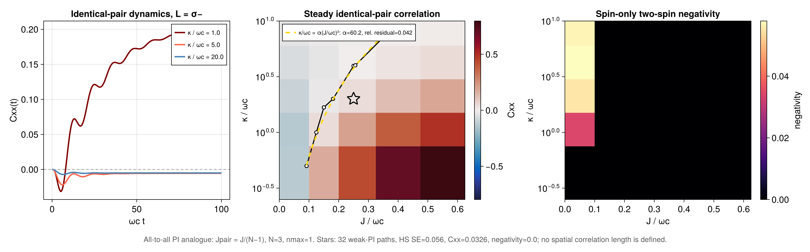
All-to-all spins with identical local pseudomodes
advanced · long · deterministic
Generic PI Lorentzian-pseudomode model; see Garraway, Phys. Rev. A 55, 2290 (1997)
pseudomodes steady-state negativity parameter-map
julia --project=. examples/all_to_all_xx_spin_local_pseudomodes.jl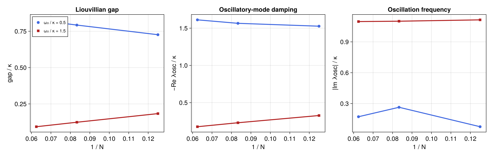
Boundary time-crystal slow modes
advanced · medium · deterministic
Iemini et al., Phys. Rev. Lett. 121, 035301 (2018)
liouvillian-spectrum gap dynamics
julia --project=. examples/boundary_time_crystal.jl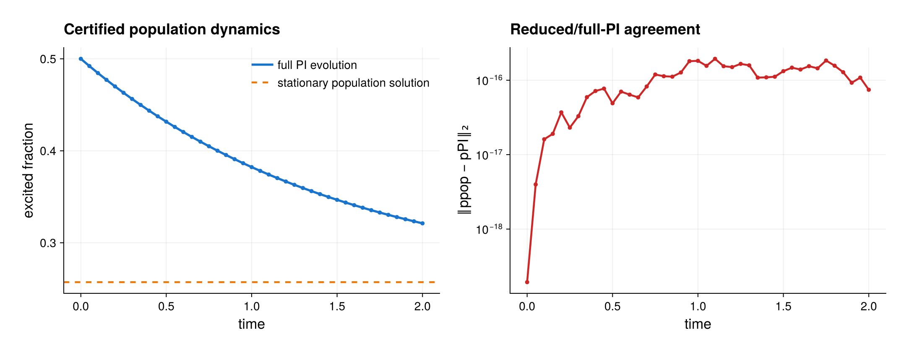
Certified qubit population dynamics
beginner · short · deterministic
Shammah et al., Phys. Rev. A 98, 063815 (2018)
populations dynamics steady-state certification
julia --project=. examples/qubit_population_dynamics.jl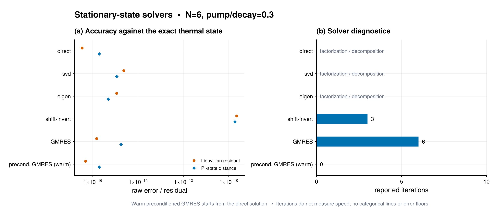
Choosing and validating a stationary-state solver
intermediate · short · deterministic
PermutationalInvariantDynamics.jl stationary-solver comparison
steady-state solver-selection preconditioning diagnostics
julia --project=. examples/steady_state_methods.jl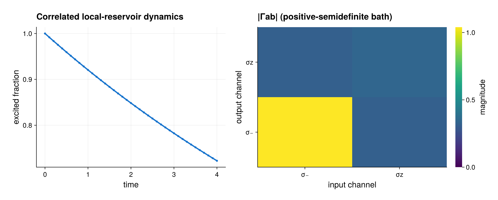
Correlated local and collective reservoirs
advanced · short · deterministic
PermutationalInvariantDynamics.jl correlated-reservoir workflow
correlated-noise dynamics kossakowski-matrix
julia --project=. examples/correlated_reservoirs.jl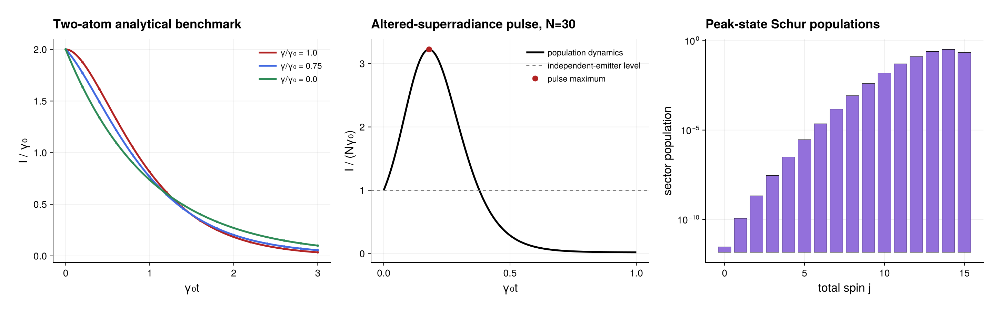
Correlated superradiant pulse and Schur blocks
intermediate · medium · deterministic
Damanet et al., Phys. Rev. A 94, 033838 (2016)
superradiance dynamics schur-visualization
julia --project=. examples/correlated_superradiance.jl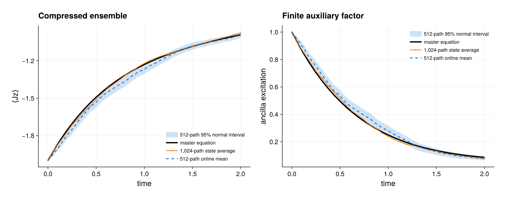
Density-valued trajectories of composite PI systems
advanced · medium · stochastic
PermutationalInvariantDynamics.jl composite-trajectory workflow
composite-systems quantum-trajectories online-statistics
julia --project=. examples/composite_quantum_trajectories.jl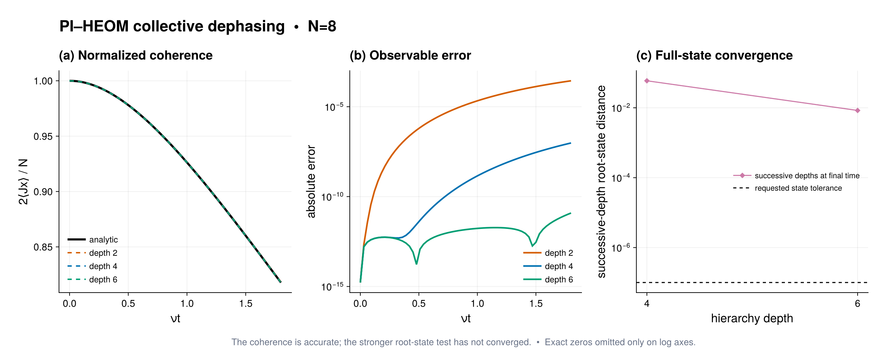
Deterministic PI hierarchy equations of motion
advanced · medium · deterministic
Tanimura, J. Chem. Phys. 153, 020901 (2020)
heom non-markovian-dynamics hierarchy-convergence
julia --project=. examples/pi_heom.jl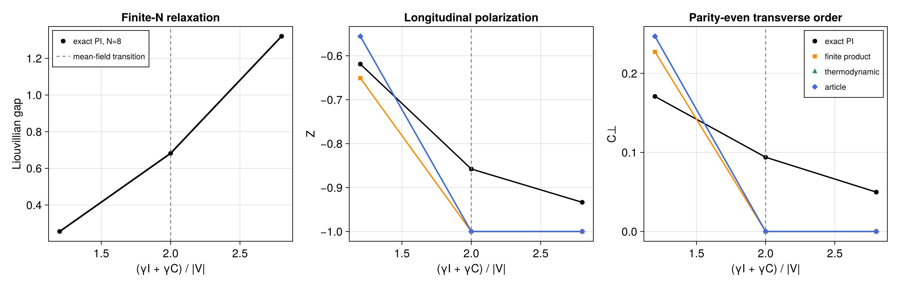
Dissipative collective-spin pairing
advanced · long · deterministic
Passarelli et al., Phys. Rev. A 110, 062208 (2024)
steady-state mean-field finite-size-scaling
julia --project=. examples/dissipative_collective_spin_pairing.jl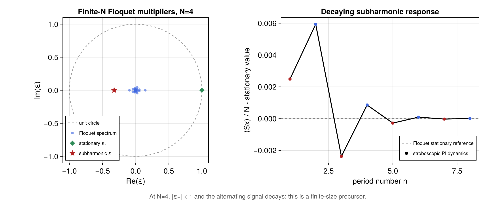
Dissipative discrete time crystal
advanced · medium · deterministic
Gong et al., Phys. Rev. Lett. 120, 040404 (2018)
floquet time-crystal dynamics
julia --project=. examples/dissipative_discrete_time_crystal.jl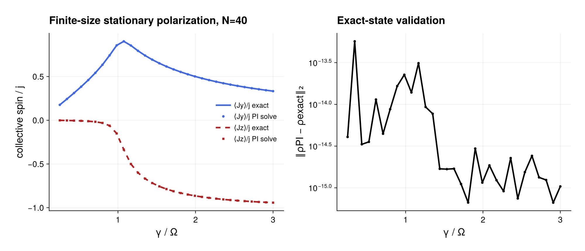
Driven cooperative fluorescence
intermediate · medium · deterministic
Drummond and Carmichael, Opt. Commun. 27, 160 (1978)
steady-state observables literature-validation
julia --project=. examples/cooperative_fluorescence.jl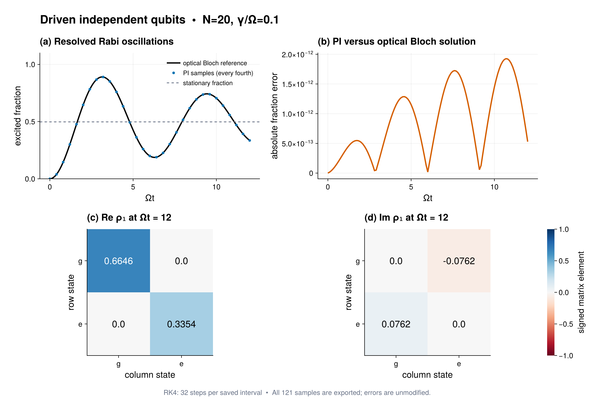
Driven qubits with independent decay
beginner · short · deterministic
PermutationalInvariantDynamics.jl driven-qubit validation example
dynamics observables one-body-rdm
julia --project=. examples/driven_qubits.jl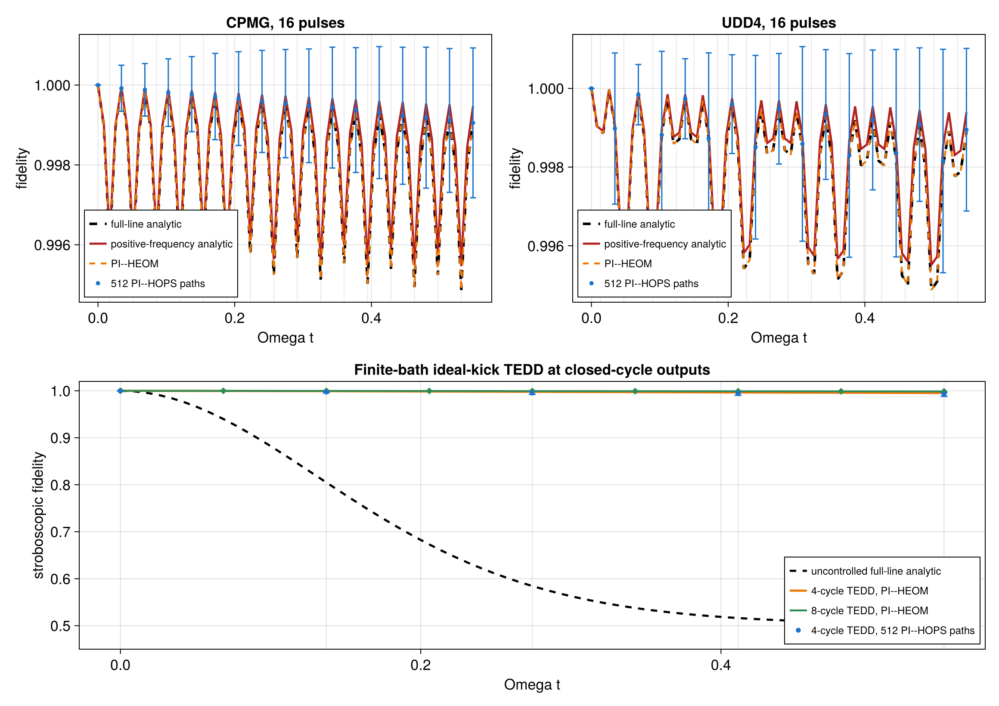
Dynamical decoupling with PI-HOPS and PI-HEOM
advanced · long · stochastic
Colin Read, Studying pure dephasing and dynamical decoupling (2023 report)
hops heom control filter-functions convergence
julia --project=. examples/nonmarkovian_dynamical_decoupling.jl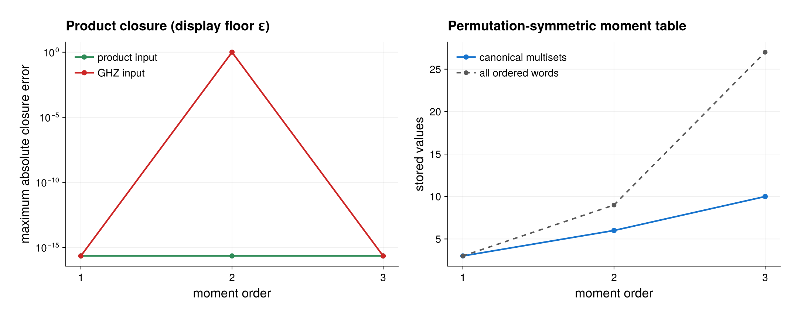
Exact PI moments for cumulant closures
advanced · short · deterministic
PermutationalInvariantDynamics.jl cumulant-validation bridge
cumulants moments interoperability
julia --project=. examples/cumulant_bridge.jl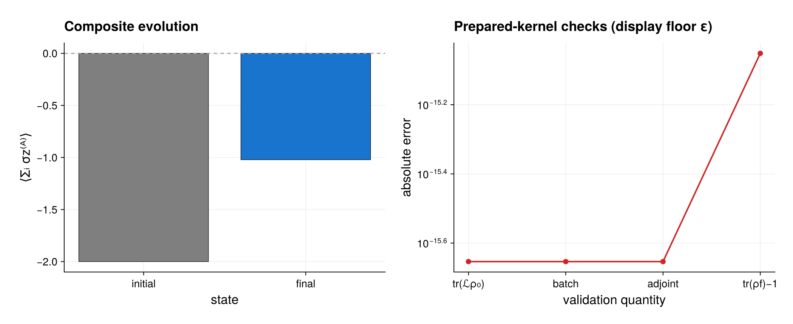
Factorized dynamics of several PI subsystems
advanced · short · deterministic
PermutationalInvariantDynamics.jl composite-system workflow
composite-systems matrix-free-dynamics partial-trace batch-action
julia --project=. examples/composite_ensembles.jl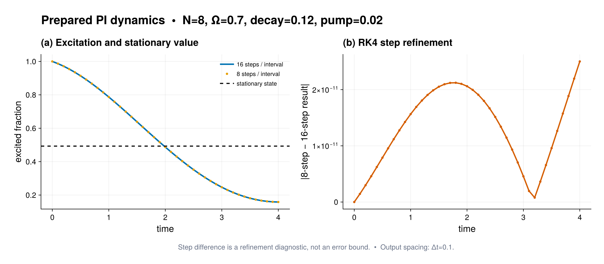
From a PI model to dynamics and a stationary state
beginner · short · deterministic
PermutationalInvariantDynamics.jl model-to-solution tutorial
dynamics steady-state observables convergence
julia --project=. examples/getting_started.jl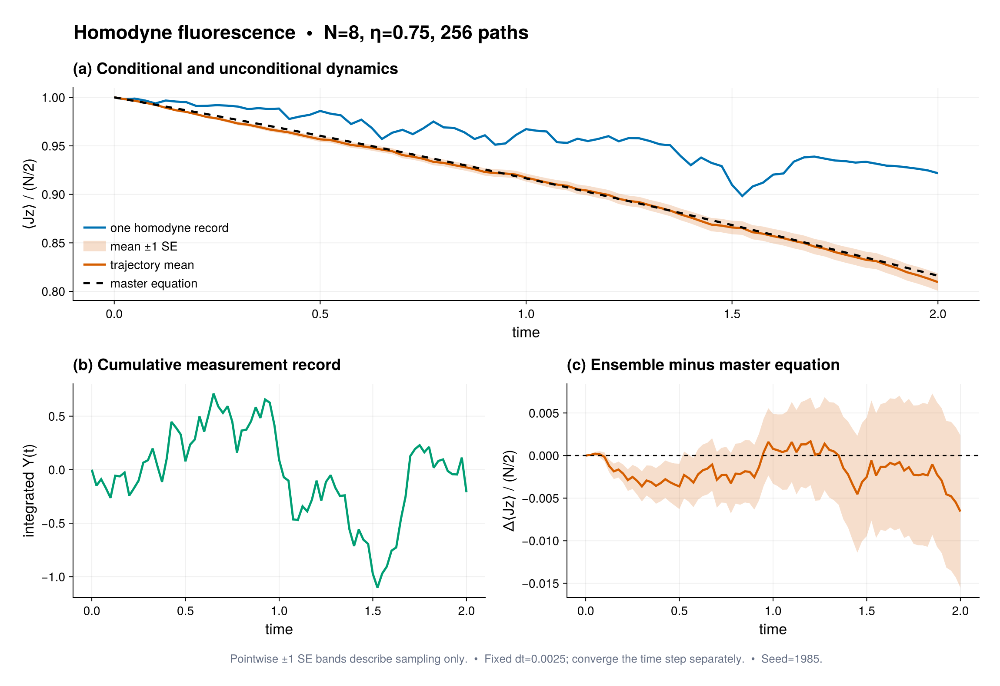
Homodyne PI trajectories
advanced · medium · stochastic
Wiseman and Milburn, Quantum Measurement and Control (2010)
diffusive-trajectories homodyne conditional-dynamics
julia --project=. examples/homodyne_pi_trajectories.jl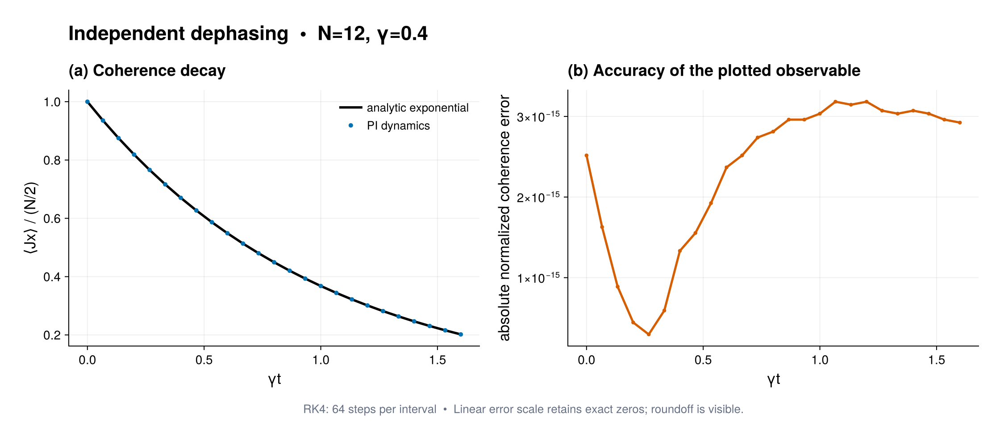
Independent dephasing and Ramsey coherence
beginner · short · deterministic
Huelga et al., Phys. Rev. Lett. 79, 3865 (1997)
dynamics dephasing qfi
julia --project=. examples/independent_dephasing_coherence.jl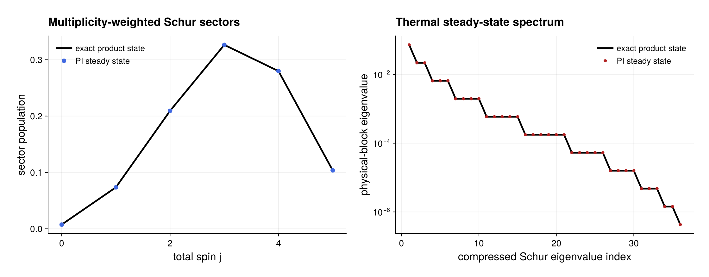
Independent pumping and the thermal product state
beginner · instant · deterministic
Shammah et al., Phys. Rev. A 98, 063815 (2018)
steady-state populations analytical-validation
julia --project=. examples/local_pumping.jl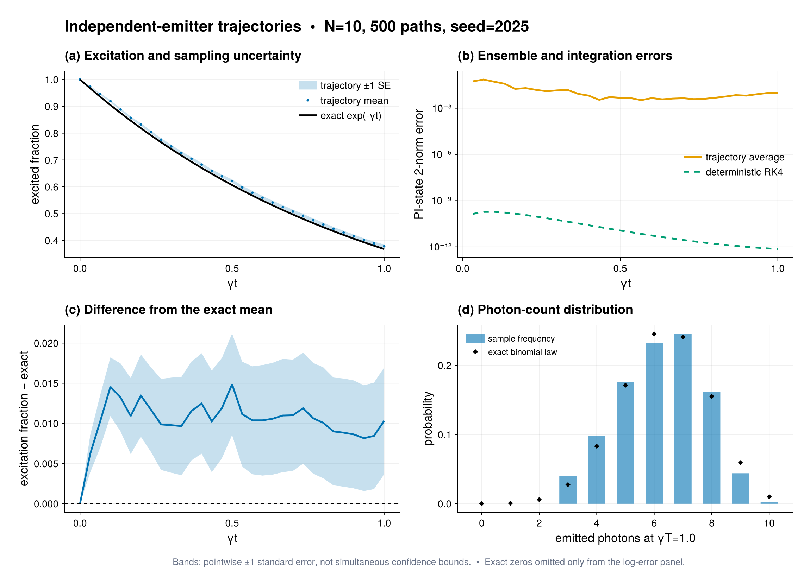
Independent-emitter quantum-trajectory benchmark
intermediate · medium · stochastic
Mølmer, Castin, and Dalibard, J. Opt. Soc. Am. B 10, 524 (1993)
quantum-trajectories online-statistics analytical-validation
julia --project=. examples/quantum_trajectories.jl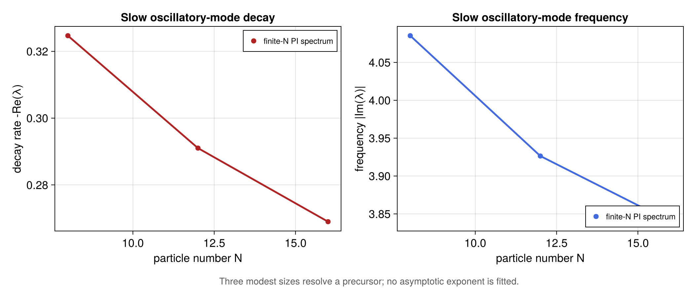
Interacting boundary time crystal
advanced · long · deterministic
Piccitto et al., Phys. Rev. B 104, 014307 (2021)
liouvillian-spectrum time-crystal interactions
julia --project=. examples/interacting_boundary_time_crystal.jl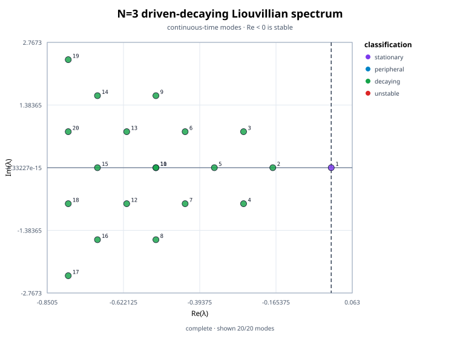
Liouvillian and Floquet spectral visualization
intermediate · short · deterministic
PermutationalInvariantDynamics.jl compressed-spectrum workflow
liouvillian-spectrum floquet-spectrum visualization
julia --project=. examples/spectral_visualization.jl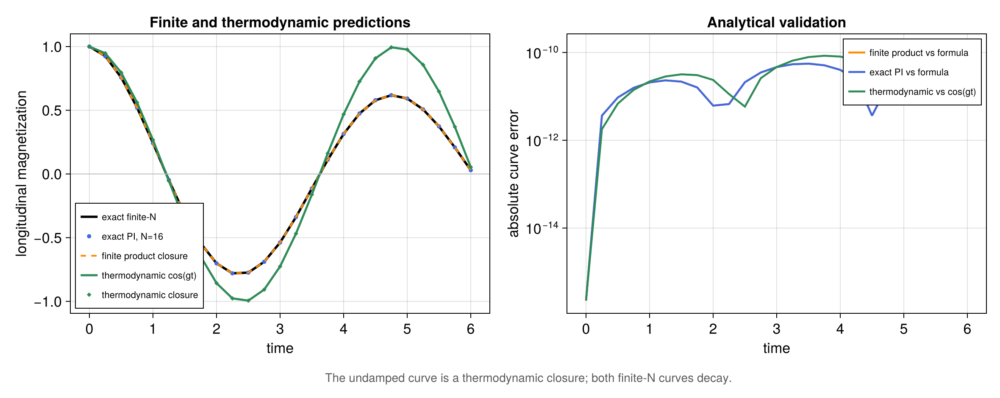
Mean-field time-crystal predictions
intermediate · medium · deterministic
Iemini et al., Phys. Rev. Lett. 121, 035301 (2018)
mean-field dynamics finite-size-comparison
julia --project=. examples/meanfield_time_crystal.jl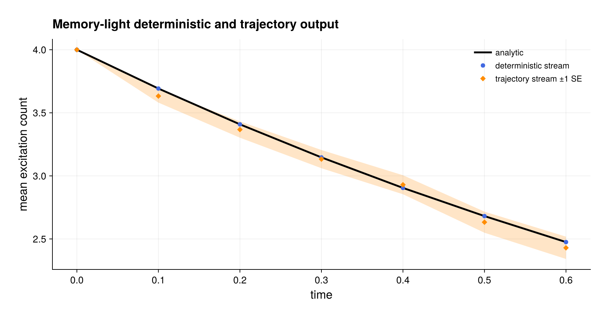
Memory-bounded observable streaming
beginner · short · deterministic
PermutationalInvariantDynamics.jl streaming-output workflow
dynamics streaming online-statistics
julia --project=. examples/streaming_output.jl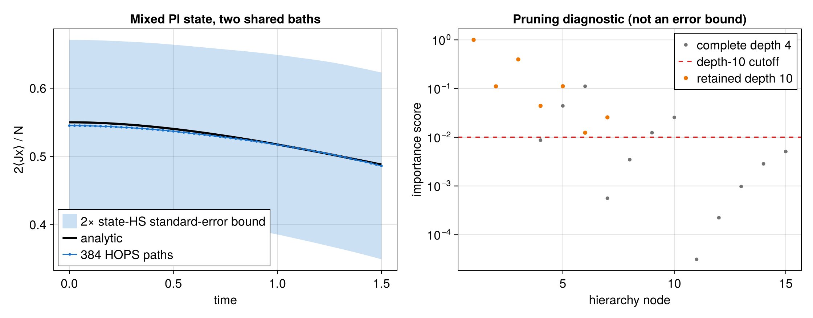
Mixed-state multi-bath PI-HOPS
advanced · long · stochastic
Suess, Eisfeld, and Strunz, Phys. Rev. Lett. 113, 150403 (2014)
hops multiple-baths mixed-states importance-pruning
julia --project=. examples/pi_hops_mixed_multibath.jl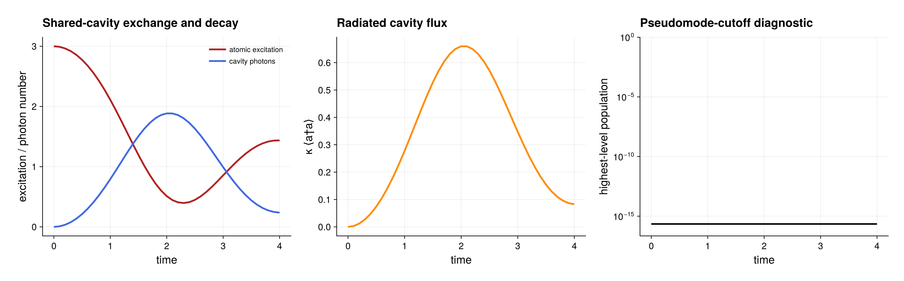
One pseudomode shared by a PI ensemble
advanced · medium · deterministic
Garraway, Phys. Rev. A 55, 2290 (1997)
global-pseudomode composite-dynamics partial-trace cutoff-convergence
julia --project=. examples/global_pseudomode_cavity.jl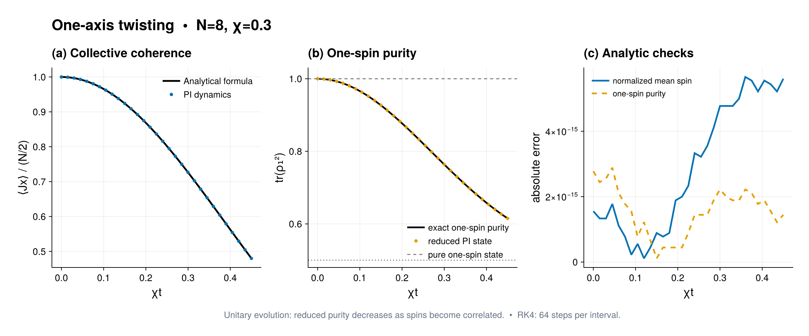
One-axis twisting and spin squeezing
intermediate · short · deterministic
Kitagawa and Ueda, Phys. Rev. A 47, 5138 (1993)
dynamics spin-squeezing entanglement
julia --project=. examples/one_axis_twisting.jl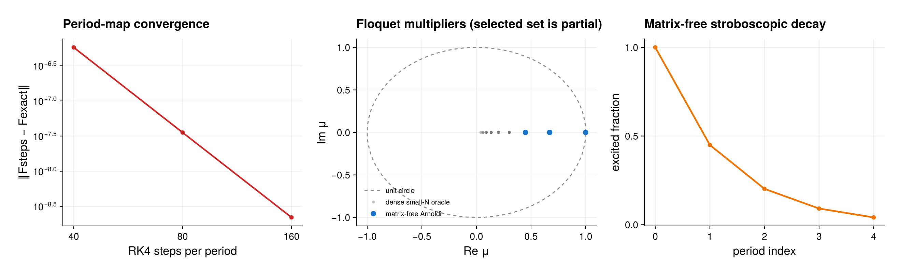
Periodic decay and Floquet spectra
advanced · medium · deterministic
PermutationalInvariantDynamics.jl Floquet workflow
floquet periodic-steady-state spectrum
julia --project=. examples/periodic_decay_channel.jl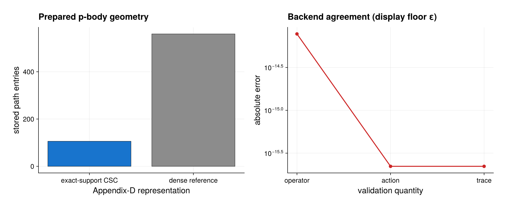
Permutation-symmetric pair processes
intermediate · short · deterministic
Bastin and Martin, J. Phys. A 58, 275301 (2025), Appendix D
p-body dynamics appendix-d
julia --project=. examples/pbody_pair_processes.jl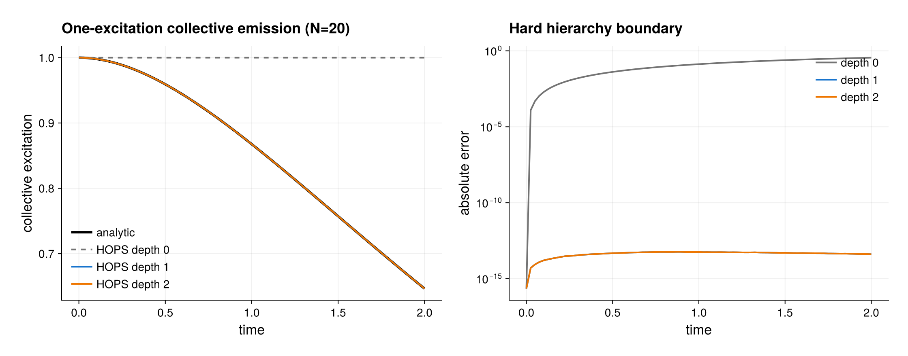
PI-HOPS with collective emission
advanced · medium · stochastic
Suess, Eisfeld, and Strunz, Phys. Rev. Lett. 113, 150403 (2014)
hops collective-emission non-markovian-dynamics
julia --project=. examples/pi_hops_collective_emission.jl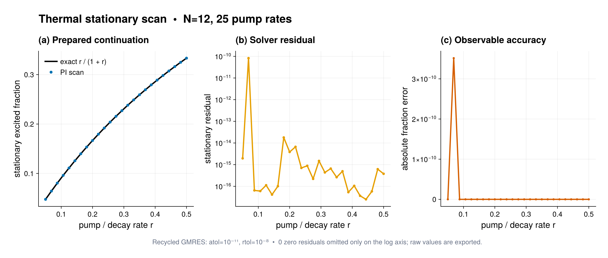
Prepared continuation over a parameter grid
intermediate · medium · deterministic
PermutationalInvariantDynamics.jl prepared-scan workflow
parameter-scan continuation checkpointing sensitivities
julia --project=. examples/parameter_scan.jl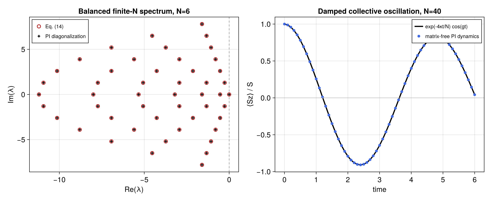
PT-symmetric dissipative time crystal
advanced · medium · deterministic
Nakanishi and Sasamoto, Phys. Rev. A 105, 022219 (2022)
pt-symmetry liouvillian-spectrum dynamics
julia --project=. examples/pt_symmetric_time_crystal.jl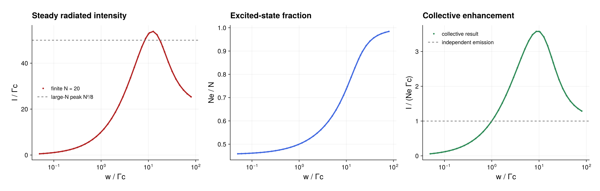
Pumped steady-state superradiance
intermediate · medium · deterministic
Meiser and Holland, Phys. Rev. A 81, 033847 (2010)
steady-state observables finite-size-scaling
julia --project=. examples/steady_superradiance.jl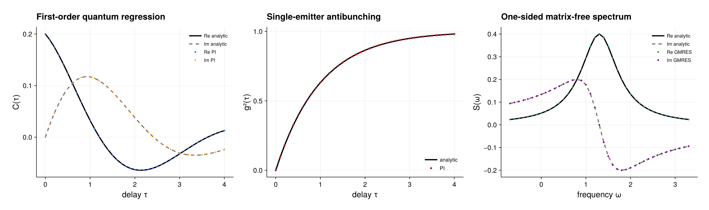
Quantum regression and optical spectra
intermediate · medium · deterministic
Lax, Phys. Rev. 129, 2342 (1963)
correlations quantum-regression optical-spectrum
julia --project=. examples/quantum_regression.jl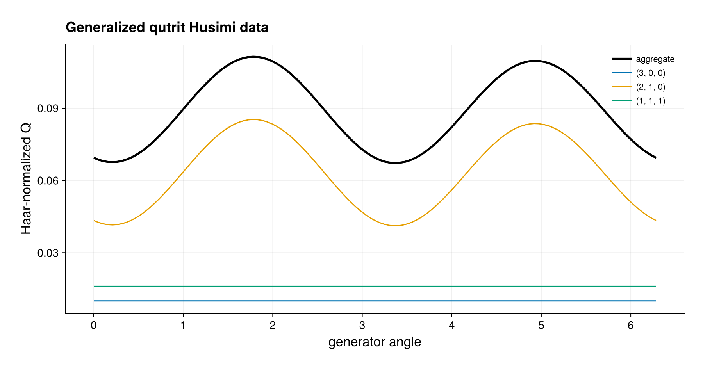
Qudit coherent-state Husimi Q data
advanced · medium · deterministic
Perelomov, Generalized Coherent States and Their Applications (1986)
qudit phase-space husimi-q
julia --project=. examples/qudit_coherent_state_q_distribution.jl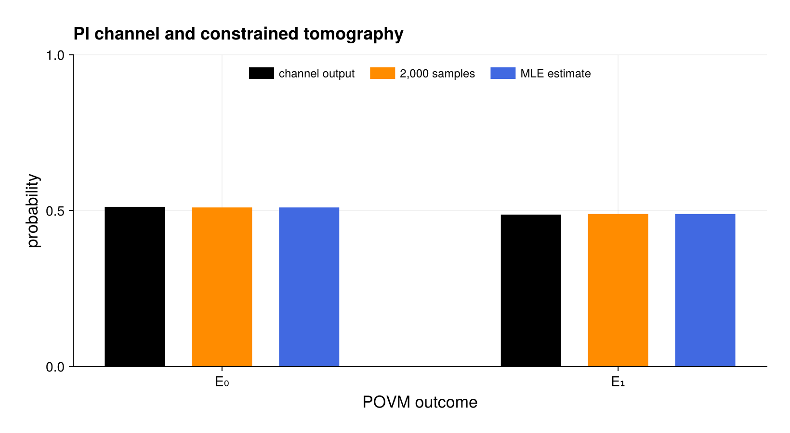
Research utilities and interoperability
advanced · short · deterministic
PermutationalInvariantDynamics.jl research-utility workflow
channels tomography checkpoints symmetries
julia --project=. examples/research_utilities.jlReusable literature-model constructors
intermediate · short · deterministic
Published validations collected by PermutationalInvariantDynamics.jl
model-construction literature-validation reproducibility
julia --project=. examples/paper_models.jl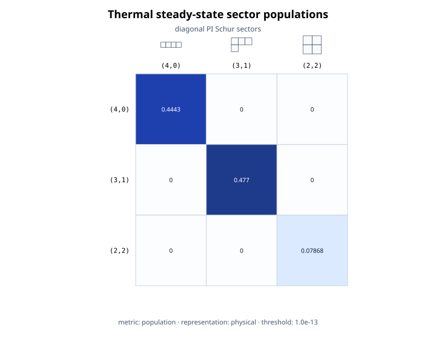
Schur-block and Young-diagram visualization
intermediate · short · deterministic
PermutationalInvariantDynamics.jl Schur-block visualization workflow
schur-visualization density-spectrum liouvillian-structure
julia --project=. examples/irrep_block_visualization.jl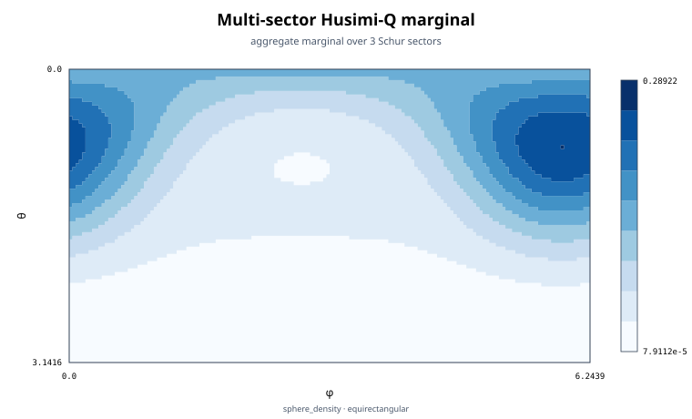
Sector-resolved spin phase space
intermediate · short · deterministic
Agarwal, Phys. Rev. A 24, 2889 (1981)
phase-space husimi-q spin-wigner schur-sectors
julia --project=. examples/spin_phase_space.jl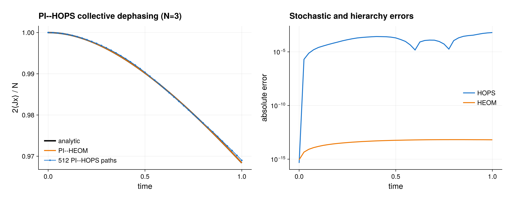
Stochastic PI hierarchy of pure states
advanced · medium · stochastic
Suess, Eisfeld, and Strunz, Phys. Rev. Lett. 113, 150403 (2014)
hops non-markovian-dynamics ensemble-convergence
julia --project=. examples/pi_hops.jl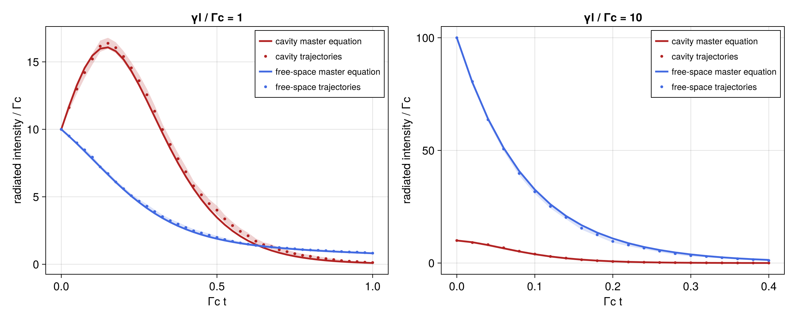
Superradiant quantum trajectories
advanced · long · stochastic
Mølmer, Castin, and Dalibard, J. Opt. Soc. Am. B 10, 524 (1993)
quantum-trajectories superradiance population-comparison
julia --project=. examples/superradiant_quantum_trajectories.jl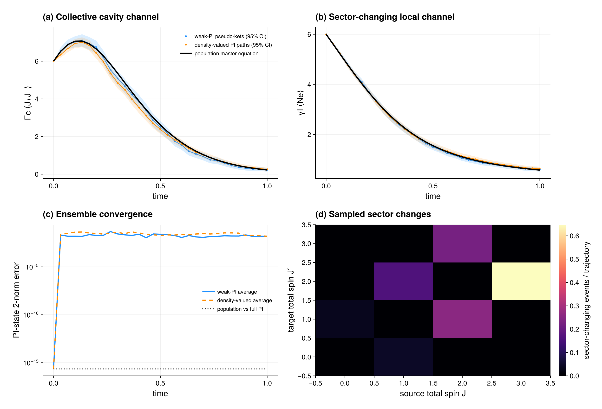
Weak-PI pseudo-ket trajectories
advanced · medium · stochastic
Zhang, Zhang, and Mølmer, New J. Phys. 20, 112001 (2018); Lloyd, Ziolkowska, and Keeling, Permutation-symmetric quantum trajectories, arXiv:2605.11103 (2026)
weak-pi quantum-trajectories steady-state method-comparison
julia --project=. examples/weak_pi_trajectories.jl